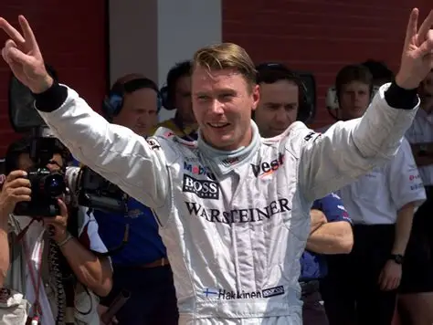
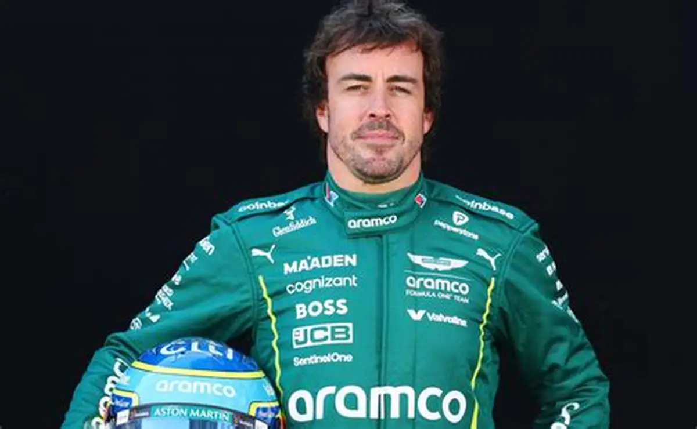
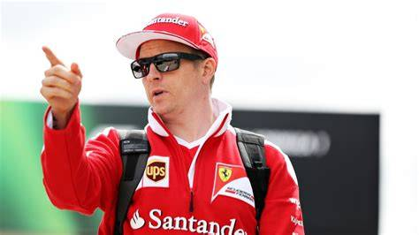
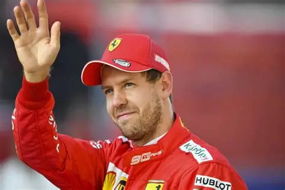
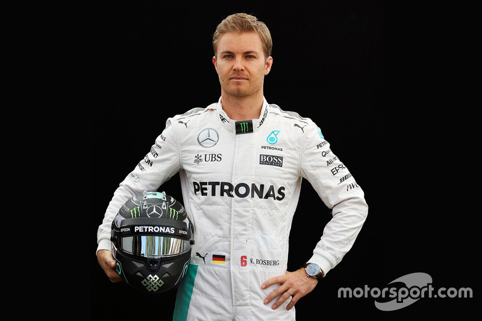
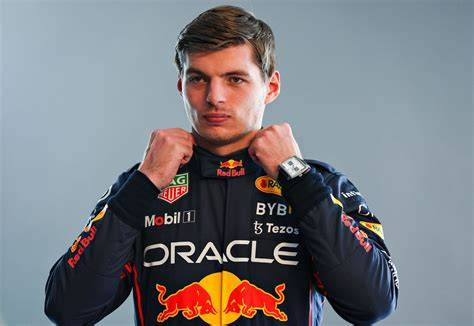

Nie ma żednego sportu bez sportowców, i dlatego, Formuła 1 nie jest wyjątkiem. Historię F1 kształtują nie tylko wspaniałe samochody, brawurowe wyprzedzenia, ale też kierowcy. Tutaj przedstawię mistrzów Formuły 1 z lat 2000 to teraz.
|  | Mika Häkkinen - fiński kierowca wyścigowy, rywalizujący w Formule 1 w latach 1998 - 2001. W sezonach 1998 i 1999 zdobył mistrzostwo. |
Michael Schumacher - jeden z najlepszych kierowców Formuły 1. Pochodzi z Niemiec i startował w sezonach 1999 - 2006 i 2010 - 2012. W czasie swej kariery kierowcy zdobył mistrzostw i wiele rekordów takich jak najszybsze okrążenie. | |
|  | Fernando Alonso - hiszpański kierowca Formuły 1, jeżdżący w latach 2001 - 2018 i 2023 do teraz. Zdobył 2 mistrzostwa i jest jeszcze dwukrotnym mistrzem 24 godzin Le Mans. |
|  | Kimi Räikkönen - tak samo jak Häkkinen, fiński kierowca wyścigowy i rajdowy, rywalizujący w Formule 1 w latach 2001 - 2021. Mistrz roku 2007. |
|  | Sebastian Vettel - kierowca F1 pochodzący z Niemiec, jeżdżący w latach 2007 - 2022. Vettel jest czterokrotnym mistrzem świata (2010 - 2013). |

| Lewis Hamilton - brytyjski kierowca wyścigowy, startujący w mistrzostwach świata Formuły 1 od sezonu 2007. Siedmiokrotny mistrz świata Formuły 1 2008, 2014, 2015, 2017, 2018, 2019, 2020 i trzykrotny wicemistrz w tej samej serii 2007, 2016, 2021. |
|  | Nico Rosberg - kierowca Formuły 1, jeżdżący w latach 2006 - 2016, zdobył mistrzostwo roku 2016. Pochodzi z Niemiec. |
|  | Max Verstappen - holenderski kierowca wyścigowy Formuły 1, rywalizujący od 2015 do teraz. Pierwszy swój wyścig przejechał, gdy miał 17 lat. Zdobył 4 mistrzostwa (2021 - 2024). |
| WYRÓŻNIENI KIEROWCY |
Poprzednia strona
Następna strona